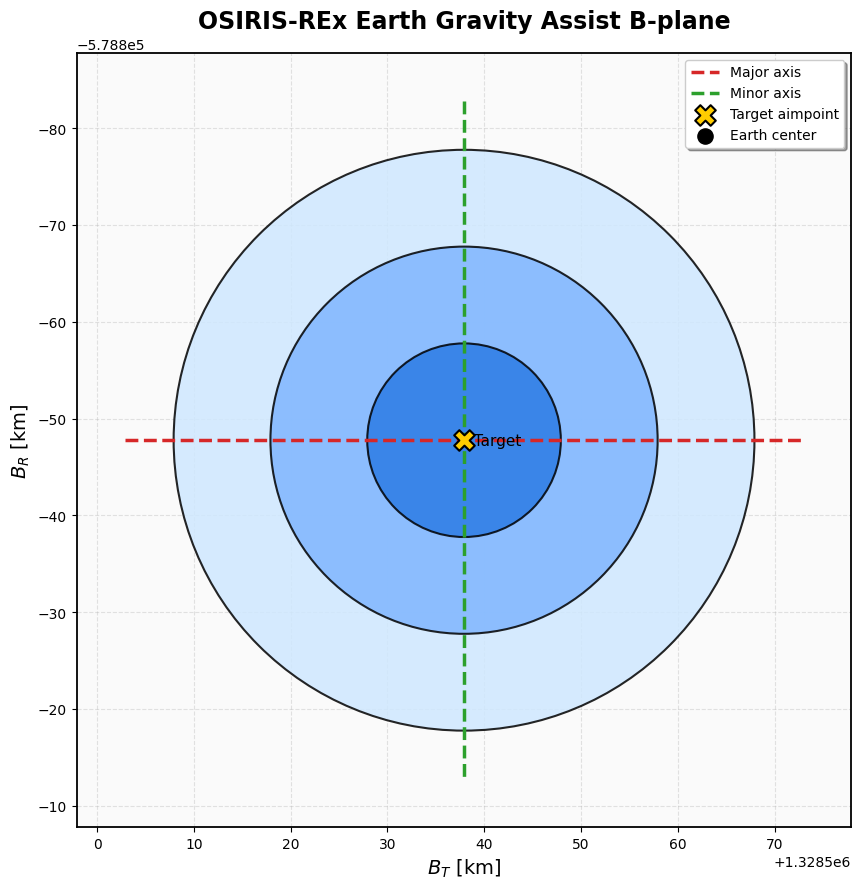

B-plane Targeting Demo: OSIRIS-REx 2017 Earth Gravity Assist#
This notebook demonstrates a B-plane targeting workflow using the OSIRIS-REx 2017 Earth gravity assist.
The workflow is:
Load the required SPICE kernels.
Define the closest-approach and TCM epochs.
Build a B-plane object for the Earth encounter.
Compute the reference B-plane target.
Inject a navigation error at the TCM epoch.
Compute corrective TCMs using linear and nonlinear targeting.
Map state covariance into B-plane uncertainty.
Imports#
Import Scarabaeus, NumPy, and set up the helper path used by the tutorial data loader.
[1]:
import sys
import os
from pathlib import Path
import numpy as np
import scarabaeus as scb
# Make the tutorials helper module importable both from scripts and notebooks.
try:
NOTEBOOK_DIR = Path(__file__).resolve().parent
except NameError:
NOTEBOOK_DIR = Path.cwd()
sys.path.insert(0, str(NOTEBOOK_DIR / ".." / ".." / "tutorials"))
Setup and SPICE kernels#
Load the tutorial data and the SPICE kernels required for the OSIRIS-REx Earth flyby example.
[2]:
km, sec = scb.Units.get_units(["km", "sec"])
# Load spice kernels
import supplementary as supp
data = supp.load_data()
from pathlib import Path
import os
def find_repo_root(start=None):
start = Path(start or Path.cwd()).resolve()
for path in [start, *start.parents]:
if (path / "pyproject.toml").exists() or (path / ".git").exists():
return path
raise FileNotFoundError("Could not find repo root from current notebook path.")
ROOT = find_repo_root()
DATA_DIR = ROOT / "data"
assert DATA_DIR.exists(), f"Data folder not found at {DATA_DIR}"
scb.SpiceManager.clear_kernels()
scb.SpiceManager.load_kernel_from_mkfile(
str(DATA_DIR / "kernels" / "locked" / "locked_generic.tm")
)
scb.SpiceManager.load_kernel(
str(DATA_DIR / "kernels" / "scenario" / "orx_160909_171201_170830_od023_v1.bsp")
)
scb.SpiceManager.print_kernels()
SCB tutorial data up to date.
================================================================================
Kernels Loaded:
================================================================================
Source: /Users/zael5647/scarabaeus/data/kernels/locked/locked_generic.tm (META)
Source: data/kernels/locked/ck/cas00084.tsc (TEXT)
Source: data/kernels/locked/lsk/naif0012.tls (TEXT)
Source: data/kernels/locked/spk/de432s.bsp (SPK)
Source: data/kernels/locked/pck/pck00010.tpc (TEXT)
Source: data/kernels/locked/pck/gm_de431.tpc (TEXT)
Source: data/kernels/locked/spk/earthstns_fx_201023.bsp (SPK)
Source: data/kernels/locked/spk/earth_200101_990628_predict.bpc (PCK)
Source: data/kernels/locked/spk/earth_topo_201023.tf (TEXT)
Source: /Users/zael5647/scarabaeus/data/kernels/scenario/orx_160909_171201_170830_od023_v1.bsp (SPK)
Epoch definition#
Define the closest-approach epoch and a TCM epoch roughly 30 days before closest approach.
[3]:
# Closest approach: 2017-SEP-22 ~16:52 UTC
# TCM epoch: 30 days prior
# =======================================================
time_ca = scb.SpiceManager.str2et("2017-SEP-22 16:52:00.000 UTC")
time_tcm = scb.SpiceManager.str2et("2017-AUG-23 00:00:00.000 UTC")
epoch_ca = scb.EpochArray(time_ca, sys="TDB")
epoch_tcm = scb.EpochArray(time_tcm, sys="TDB")
Reference state at the TCM epoch#
Load the reference OSIRIS-REx state relative to the Earth barycenter in J2000.
[4]:
# =======================================================
state_ref_tcm = scb.SpiceManager.get_state(
trgt_bdy="-64",
epoch_time=epoch_tcm.times.values,
reference_frame="J2000",
obsvr_bdy="3",
)
Construct the B-plane object#
Create the B-plane object associated with the Earth encounter. This object handles the B-plane frame and targeting utilities.
[5]:
# Built from the clean reference state → bpar_ref is
# the desired target the TCM must recover.
# =======================================================
bplane_file = os.getcwd() + "/data/kernels/OREX_EARTH_bplane.tf"
if os.path.exists(bplane_file):
os.remove(bplane_file)
BplaneObj = scb.Bplane(
epoch=epoch_tcm,
bplane_name="OREX_EARTH_BPLANE",
bplane_spice_id=12345678,
sc_name="OSIRIS-REx",
sc_spice_id=-64,
target_name="EARTHBARYCENTER",
target_spice_id=3,
fk_file=bplane_file,
v_hat=False,
new_bplane=True,
)
print()
print("#" * 80)
print(" B-plane targeting demo — OSIRIS-REx Earth gravity assist 2017")
print("#" * 80)
################################################################################
B-plane targeting demo — OSIRIS-REx Earth gravity assist 2017
################################################################################
Reference B-plane target#
Compute the desired B-plane parameters from the clean reference trajectory.
[6]:
bpar_ref = BplaneObj.compute_parameters(sc_rel_state_j2000=state_ref_tcm)
print("\n[TARGET] Desired B-plane parameters (reference trajectory):")
print(f" B·T* = {bpar_ref.values[0]:>16.3f} km")
print(f" B·R* = {bpar_ref.values[1]:>16.3f} km")
print(
f" |B| = {np.linalg.norm(bpar_ref.values[:2]):>16.3f} km (miss distance proxy)"
)
print(
f" ltof* = {bpar_ref.values[2]:>16.3f} s "
f"({bpar_ref.values[2] / 86400:.2f} days to closest approach)"
)
[TARGET] Desired B-plane parameters (reference trajectory):
B·T* = 1328001.381 km
B·R* = -578613.927 km
|B| = 1448579.215 km (miss distance proxy)
ltof* = -2376484.783 s (-27.51 days to closest approach)
Linear targeting#
Compute a corrective TCM using the local B-plane Jacobian/Newton iteration.
[8]:
print("\n" + "#" * 80)
print(" Linear targeting (Newton iteration on Jacobian)")
print("#" * 80)
DV_lin = BplaneObj.linear_targeting(sc_rel_state_j2000=state_pert_tcm)
state_corr_lin = scb.ArrayWUnits(
np.concatenate(
[
state_pert_tcm[0:3].values,
state_pert_tcm[3:6].values + DV_lin.values,
]
),
[km, km, km, km / sec, km / sec, km / sec],
)
bpar_corr_lin = BplaneObj.compute_parameters(state_corr_lin)
print(
f"\n TCM ΔV = [{DV_lin.values[0]:+.8f}, "
f"{DV_lin.values[1]:+.8f}, {DV_lin.values[2]:+.8f}] km/s"
)
print(f" |ΔV| = {np.linalg.norm(DV_lin.values) * 1e3:.6f} m/s")
print(f"\n Post-TCM residuals:")
print(f" ΔB·T = {bpar_corr_lin.values[0] - bpar_ref.values[0]:+.2e} km")
print(f" ΔB·R = {bpar_corr_lin.values[1] - bpar_ref.values[1]:+.2e} km")
print(f" Δltof = {bpar_corr_lin.values[2] - bpar_ref.values[2]:+.2e} s")
################################################################################
Linear targeting (Newton iteration on Jacobian)
################################################################################
linear_targeting converged in 2 iterations. Residual = 0.000e+00
TCM ΔV = [-0.00000733, +0.00023558, +0.00009824] km/s
|ΔV| = 0.255350 m/s
Post-TCM residuals:
ΔB·T = +5.37e+02 km
ΔB·R = -2.34e+02 km
Δltof = +0.00e+00 s
Nonlinear targeting#
Compute a corrective TCM using nonlinear optimization and compare it to the linear result.
[9]:
print("\n" + "#" * 80)
print(" Nonlinear targeting (Nelder-Mead)")
print("#" * 80)
DV_nl = BplaneObj.nonlinear_targeting(sc_rel_state_j2000=state_pert_tcm)
state_corr_nl = scb.ArrayWUnits(
np.concatenate(
[
state_pert_tcm[0:3].values,
state_pert_tcm[3:6].values + DV_nl.values,
]
),
[km, km, km, km / sec, km / sec, km / sec],
)
bpar_corr_nl = BplaneObj.compute_parameters(state_corr_nl)
print(
f"\n TCM ΔV = [{DV_nl.values[0]:+.8f}, "
f"{DV_nl.values[1]:+.8f}, {DV_nl.values[2]:+.8f}] km/s"
)
print(f" |ΔV| = {np.linalg.norm(DV_nl.values) * 1e3:.6f} m/s")
print(f"\n Post-TCM residuals:")
print(f" ΔB·T = {bpar_corr_nl.values[0] - bpar_ref.values[0]:+.2e} km")
print(f" ΔB·R = {bpar_corr_nl.values[1] - bpar_ref.values[1]:+.2e} km")
print(f" Δltof = {bpar_corr_nl.values[2] - bpar_ref.values[2]:+.2e} s")
################################################################################
Nonlinear targeting (Nelder-Mead)
################################################################################
Optimization terminated successfully.
Current function value: 0.000000
Iterations: 118
Function evaluations: 219
TCM ΔV = [-0.00000733, +0.00023558, +0.00009824] km/s
|ΔV| = 0.255350 m/s
Post-TCM residuals:
ΔB·T = +5.37e+02 km
ΔB·R = -2.34e+02 km
Δltof = +1.10e-06 s
Compare TCM solutions#
Compare the magnitude of the linear and nonlinear TCMs.
[10]:
print("\n" + "#" * 80)
print(" TCM comparison")
print("#" * 80)
print(f" |ΔV| linear = {np.linalg.norm(DV_lin.values) * 1e3:.6f} m/s")
print(f" |ΔV| nonlinear = {np.linalg.norm(DV_nl.values) * 1e3:.6f} m/s")
print(
f" |difference| = "
f"{np.linalg.norm(DV_lin.values - DV_nl.values) * 1e3:.2e} m/s"
)
################################################################################
TCM comparison
################################################################################
|ΔV| linear = 0.255350 m/s
|ΔV| nonlinear = 0.255350 m/s
|difference| = 4.24e-09 m/s
Covariance mapping#
Map a diagonal OD covariance into B-plane uncertainty.
[11]:
# Diagonal OD covariance consistent with the 1-sigma
# values used to generate the navigation error above.
# =======================================================
print("\n" + "#" * 80)
print(" Covariance analysis")
print("#" * 80)
sv_cov = np.diag(
[
pos_1sigma**2,
pos_1sigma**2,
pos_1sigma**2,
vel_1sigma**2,
vel_1sigma**2,
vel_1sigma**2,
]
)
P_bplane = BplaneObj.target_covariance(sv_cov, sc_rel_state_j2000=state_pert_tcm)
sigma_bt = np.sqrt(P_bplane.values[0, 0])
sigma_br = np.sqrt(P_bplane.values[1, 1])
sigma_ltof = np.sqrt(P_bplane.values[2, 2])
print(f"\n 1-sigma B-plane uncertainties mapped from OD covariance:")
print(f" σ(B·T) = {sigma_bt:.4f} km")
print(f" σ(B·R) = {sigma_br:.4f} km")
print(f" σ(ltof) = {sigma_ltof:.4f} s")
################################################################################
Covariance analysis
################################################################################
1-sigma B-plane uncertainties mapped from OD covariance:
σ(B·T) = 10.0000 km
σ(B·R) = 10.0000 km
σ(ltof) = 3.4594 s
Plot B-plane covariance#
Plot the mapped B-plane covariance ellipse.
[12]:
# ============================================================
# Fancy custom B-plane covariance plot
# ============================================================
import numpy as np
import matplotlib.pyplot as plt
from matplotlib.patches import Ellipse
# Extract covariance matrix
P = P_bplane[:2, :2].values
# Target coordinates
bt = float(BplaneObj._bt_ref.values)
br = float(BplaneObj._br_ref.values)
# Eigen decomposition
eigvals, eigvecs = np.linalg.eigh(P)
# Sort largest first
order = eigvals.argsort()[::-1]
eigvals = eigvals[order]
eigvecs = eigvecs[:, order]
# Ellipse angle
angle = np.degrees(np.arctan2(eigvecs[1, 0], eigvecs[0, 0]))
# ============================================================
# Plot
# ============================================================
fig, ax = plt.subplots(figsize=(9, 9))
# Background style
ax.set_facecolor("#fafafa")
# Sigma ellipses
sigmas = [3, 2, 1]
colors = ["#cfe8ff", "#7fb6ff", "#2c7be5"]
for nsig, color in zip(sigmas, colors):
width = 2 * nsig * np.sqrt(eigvals[0])
height = 2 * nsig * np.sqrt(eigvals[1])
ell = Ellipse(
(bt, br),
width,
height,
angle=angle,
facecolor=color,
edgecolor="black",
linewidth=1.5,
alpha=0.85,
zorder=2,
)
ax.add_patch(ell)
# Principal directions
major = eigvecs[:, 0]
minor = eigvecs[:, 1]
Lmaj = 3.5 * np.sqrt(eigvals[0])
Lmin = 3.5 * np.sqrt(eigvals[1])
ax.plot(
[bt - Lmaj * major[0], bt + Lmaj * major[0]],
[br - Lmaj * major[1], br + Lmaj * major[1]],
"--",
lw=2.5,
color="#d62728",
label="Major axis",
)
ax.plot(
[bt - Lmin * minor[0], bt + Lmin * minor[0]],
[br - Lmin * minor[1], br + Lmin * minor[1]],
"--",
lw=2.5,
color="#2ca02c",
label="Minor axis",
)
# Target point
ax.scatter(
bt,
br,
s=220,
marker="X",
color="#ffcc00",
edgecolor="black",
linewidth=1.5,
zorder=10,
label="Target aimpoint",
)
# Small Earth marker at origin
ax.scatter(
0,
0,
s=120,
color="black",
marker="o",
zorder=8,
label="Earth center",
)
# ============================================================
# Labels / style
# ============================================================
ax.set_title(
"OSIRIS-REx Earth Gravity Assist B-plane",
fontsize=17,
fontweight="bold",
pad=18,
)
ax.set_xlabel(r"$B_T$ [km]", fontsize=14)
ax.set_ylabel(r"$B_R$ [km]", fontsize=14)
# Equal aspect
ax.set_aspect("equal", adjustable="box")
# Invert R axis (standard B-plane convention)
ax.invert_yaxis()
# Grid
ax.grid(True, linestyle="--", alpha=0.35)
# Dynamic limits
maxsig = 4 * np.sqrt(np.max(eigvals))
ax.set_xlim(bt - maxsig, bt + maxsig)
ax.set_ylim(br + maxsig, br - maxsig)
# Pretty frame
for spine in ax.spines.values():
spine.set_linewidth(1.3)
# Legend
leg = ax.legend(
loc="upper right",
frameon=True,
fancybox=True,
shadow=True,
)
# Optional annotation
ax.text(
bt,
br,
" Target",
fontsize=11,
verticalalignment="center",
)
plt.tight_layout()
plt.show()

Notes#
The B-plane target is defined by the reference trajectory. The injected navigation error represents a possible OD error at the TCM epoch.
Linear targeting should be accurate when the perturbation is small enough for the B-plane mapping to remain locally linear.
The covariance mapping gives the predicted residual B-plane uncertainty from the assumed state covariance.